# A collection of R packages designed for data science
library(tidyverse)
# Converts stats functions to a tidyverse-friendly format
library(rstatix)
# Creates diagnostic plots using ggplot2
library(ggResidpanel)
# Helper functions for tidying data
library(broom)9 Multiple linear regression
Learning outcomes
Questions
- How do I use the linear model framework with three predictor variables?
Objectives
- Be able to expand the linear model framework with three predictor variables
- Define the equation for the line of best fit for each categorical variable
- Be able to construct and analyse any possible combination of predictor variables in the data
9.1 Libraries and functions
Click to expand
9.1.1 Libraries
9.1.2 Functions
# Gets underlying data out of model object
broom::augment()
# Creates diagnostic plots
ggResidpanel::resid_panel()
# Performs an analysis of variance
stats::anova()
# Creates a linear model
stats::lm()9.1.3 Libraries
# A fundamental package for scientific computing in Python
import numpy as np
# A Python data analysis and manipulation tool
import pandas as pd
# Simple yet exhaustive stats functions.
import pingouin as pg
# Python equivalent of `ggplot2`
from plotnine import *
# Statistical models, conducting tests and statistical data exploration
import statsmodels.api as sm
# Convenience interface for specifying models using formula strings and DataFrames
import statsmodels.formula.api as smf9.1.4 Functions
# Reads in a .csv file
pandas.read_csv()
# Creates a model from a formula and data frame
statsmodels.formula.api.ols()9.2 Purpose and aim
Revisiting the linear model framework and expanding to systems with three predictor variables.
9.3 Data and hypotheses
The data set we’ll be using is located in data/CS5-pm2_5.csv. It contains data on air pollution levels measured in London, in 2019. It also contains several meteorological measurements. Each variable was recorded on a daily basis.
Note: some of the variables are based on simulations.
It contains the following variables:
| variable | explanation |
|---|---|
avg_temp |
average daily temperature (\(^\circ C\)) |
date |
date of record |
location |
location in London (inner or outer) |
pm2_5 |
concentration of PM2.5 (\(\mu g / m^3\)) |
rain_mm |
daily rainfall in mm (same across both locations) |
wind_m_s |
wind speed in \(m/s\) |
9.4 Summarise and visualise
Let’s first load the data:
pm2_5 <- read_csv("data/CS5-pm2_5.csv")Rows: 730 Columns: 6
── Column specification ────────────────────────────────────────────────────────
Delimiter: ","
chr (2): date, location
dbl (4): avg_temp, pm2_5, rain_mm, wind_m_s
ℹ Use `spec()` to retrieve the full column specification for this data.
ℹ Specify the column types or set `show_col_types = FALSE` to quiet this message.head(pm2_5)# A tibble: 6 × 6
avg_temp date location pm2_5 rain_mm wind_m_s
<dbl> <chr> <chr> <dbl> <dbl> <dbl>
1 4.5 01/01/2019 inner 17.1 2.3 3.87
2 4.9 01/01/2019 outer 10.8 2.3 5.84
3 4.3 02/01/2019 inner 14.9 2.3 3.76
4 4.8 02/01/2019 outer 11.4 2.3 6
5 4 03/01/2019 inner 18.5 1.4 2.13
6 4.5 03/01/2019 outer 15.0 1.4 2.57It’s the pm2_5 response variable we’re interested in here. Let’s start by checking if there might be a difference between PM2.5 level in inner and outer London:
ggplot(pm2_5,
aes(x = location, y = pm2_5)) +
geom_boxplot() +
geom_jitter(width = 0.1, alpha = 0.3)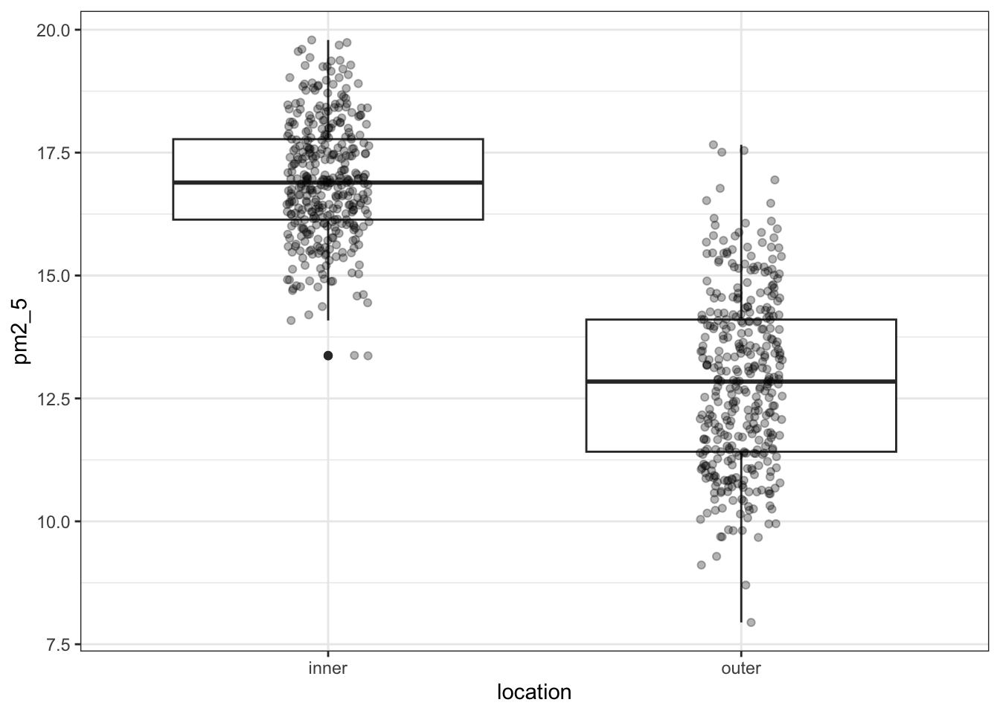
I’ve added the (jittered) data to the plot, with some transparency (alpha = 0.3). It’s always good to look at the actual data and not just summary statistics (which is what the box plot is).
There seems to be quite a difference between the PM2.5 levels in the two London areas, with the levels in inner London being markedly higher. I’m not surprised by this! So when we do our statistical testing, I would expect to find a clear difference between the locations.
Apart from the location, there are quite a few numerical descriptor variables. We could plot them one-by-one, but that’s a bit tedious. So instead we use the pairs() function again. This only works on numerical data, so we select all the columns that are numeric with select_if(is.numeric):
pm2_5 %>%
select_if(is.numeric) %>%
pairs(lower.panel = NULL)
We can see that there is not much of a correlation between pm2_5 and avg_temp or rain_mm, whereas there might be something going on in relation to wind_m_s.
Other notable things include that rainfall seems completely independent of wind speed (rain fall seems pretty constant). Nor does the average temperature seem in any way related to wind speed (it looks like a random collection of data points!).
We can visualise the relationship between pm2_5 and wind_m_s in a bit more detail, by plotting the data against each other and colouring by location:
ggplot(pm2_5,
aes(x = wind_m_s, y = pm2_5,
colour = location)) +
geom_point()
This seems to show that there might be some linear relationship between PM2.5 levels and wind speed.
Another way of looking at this would be to create a correlation matrix, like we did before in the correlations chapter:
pm2_5 %>%
select_if(is.numeric) %>%
cor() avg_temp pm2_5 rain_mm wind_m_s
avg_temp 1.00000000 0.03349457 0.03149221 -0.01107855
pm2_5 0.03349457 1.00000000 -0.02184951 -0.41733945
rain_mm 0.03149221 -0.02184951 1.00000000 0.04882097
wind_m_s -0.01107855 -0.41733945 0.04882097 1.00000000This confirms what we saw in the plots, there aren’t any very strong correlations between the different (numerical) variables, apart from a negative correlation between pm2_5 and wind_m_s, which has a Pearson’s r of \(r\) = -0.42.
Let’s first load the data:
pm2_5_py = pd.read_csv("data/CS5-pm2_5.csv")
pm2_5_py.head() avg_temp date location pm2_5 rain_mm wind_m_s
0 4.5 01/01/2019 inner 17.126 2.3 3.87
1 4.9 01/01/2019 outer 10.821 2.3 5.84
2 4.3 02/01/2019 inner 14.884 2.3 3.76
3 4.8 02/01/2019 outer 11.416 2.3 6.00
4 4.0 03/01/2019 inner 18.471 1.4 2.13It’s the pm2_5 response variable we’re interested in here. Let’s start by checking if there might be a difference between PM2.5 level in inner and outer London:
(ggplot(pm2_5_py, aes(x = "location", y = "pm2_5")) +
geom_boxplot() +
geom_jitter(width = 0.1, alpha = 0.7))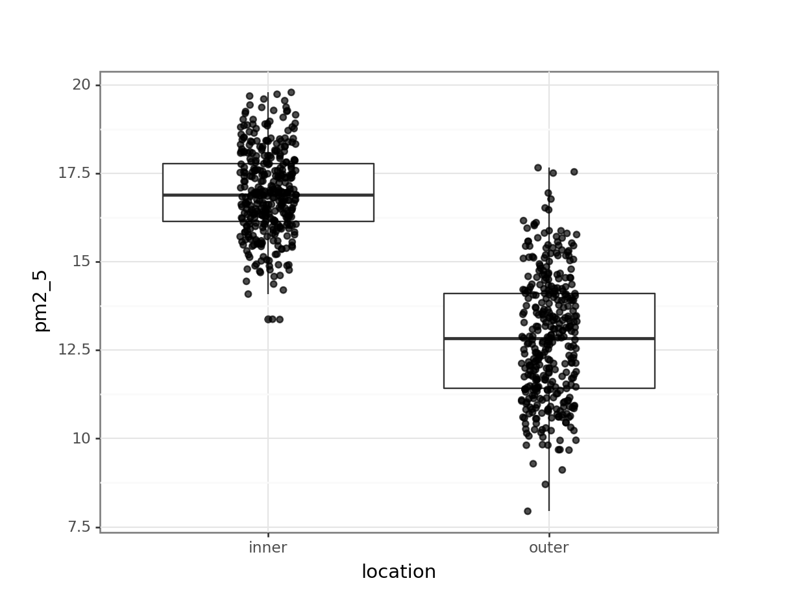
I’ve added the (jittered) data to the plot, with some transparency (alpha = 0.7). It’s always good to look at the actual data and not just summary statistics (which is what the box plot is).
There seems to be quite a difference between the PM2.5 levels in the two London areas, with the levels in inner London being markedly higher. I’m not surprised by this! So when we do our statistical testing, I would expect to find a clear difference between the locations.
Apart from the location, there are quite a few numerical descriptor variables. At this point I should probably bite the bullet and install seaborn, so I can use the pairplot() function.
But I’m not going to ;-)
I’ll just tell you that there is not much of a correlation between pm2_5 and avg_temp or rain_mm, whereas there might be something going on in relation to wind_m_s. So I plot that instead and colour it by location:
(ggplot(pm2_5_py,
aes(x = "wind_m_s",
y = "pm2_5",
colour = "location")) +
geom_point())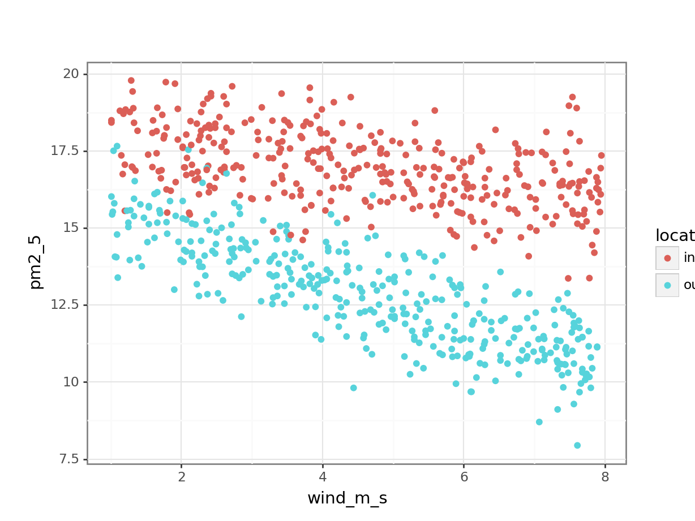
This seems to show that there might be some linear relationship between PM2.5 levels and wind speed.
If I would plot all the other variables against each other, then I would spot that rainfall seems completely independent of wind speed (rain fall seems pretty constant). Nor does the average temperature seem in any way related to wind speed (it looks like a random collection of data points!). You can check this yourself!
Another way of looking at this would be to create a correlation matrix, like we did before in the correlations chapter:
pm2_5_py.corr() avg_temp pm2_5 rain_mm wind_m_s
avg_temp 1.000000 0.033495 0.031492 -0.011079
pm2_5 0.033495 1.000000 -0.021850 -0.417339
rain_mm 0.031492 -0.021850 1.000000 0.048821
wind_m_s -0.011079 -0.417339 0.048821 1.000000This confirms what we saw in the plots, there aren’t any very strong correlations between the different (numerical) variables, apart from a negative correlation between pm2_5 and wind_m_s, which has a Pearson’s r of \(r\) = -0.42.
9.5 Implement and interpret the test
From our initial observations we derived that there might be some relationship between PM2.5 levels and wind speed. We also noticed that this is likely to be different between inner and outer London.
If we would want to test for every variable and interaction, then we would end up with a rather huge model, which would even include 3-way and a 4-way interaction! To illustrate the point that the process of model testing applies to as many variables as you like, we’re adding the avg_temp and rain_mm variables to our model.
So in this case we create a model that takes into account all of the main effects (avg_temp, location, rain_mm, wind_m_s). We also include a potential two-way interaction (location:wind_m_s). The two-way interaction may be of interest since the PM2.5 levels in response to wind speed seem to differ between the two locations.
Our model is then as follows:
pm2_5 ~ avg_temp + location + rain_mm + wind_m_s + wind_m_s:location
So let’s define and explore it!
We write the model as follows:
lm_pm2_5_full <- lm(pm2_5 ~ avg_temp + location +
rain_mm + wind_m_s +
wind_m_s:location,
data = pm2_5)Let’s look at the coefficients:
lm_pm2_5_full
Call:
lm(formula = pm2_5 ~ avg_temp + location + rain_mm + wind_m_s +
wind_m_s:location, data = pm2_5)
Coefficients:
(Intercept) avg_temp locationouter
18.18286 0.01045 -2.07084
rain_mm wind_m_s locationouter:wind_m_s
-0.02788 -0.28545 -0.42945
Extracting coefficients with
tidy()
This will give us quite a few coefficients, so instead of just calling the lm object, I’m restructuring the output using the tidy() function from the broom package. It’s installed with tidyverse but you have to load it separately using library(broom).
lm_pm2_5_full %>%
tidy() %>%
select(term, estimate)# A tibble: 6 × 2
term estimate
<chr> <dbl>
1 (Intercept) 18.2
2 avg_temp 0.0105
3 locationouter -2.07
4 rain_mm -0.0279
5 wind_m_s -0.285
6 locationouter:wind_m_s -0.429 The question is, are all of these terms statistically significant? To find out we perform an ANOVA:
anova(lm_pm2_5_full)Analysis of Variance Table
Response: pm2_5
Df Sum Sq Mean Sq F value Pr(>F)
avg_temp 1 5.29 5.29 5.0422 0.02504 *
location 1 3085.37 3085.37 2940.5300 < 2e-16 ***
rain_mm 1 2.48 2.48 2.3644 0.12457
wind_m_s 1 728.13 728.13 693.9481 < 2e-16 ***
location:wind_m_s 1 134.82 134.82 128.4912 < 2e-16 ***
Residuals 724 759.66 1.05
---
Signif. codes: 0 '***' 0.001 '**' 0.01 '*' 0.05 '.' 0.1 ' ' 1From this we can see that the interaction between location and wind_m_s is statistically significant. Which means that we can’t just talk about the effect of location or wind_m_s on PM2.5 levels, without taking the other variable into account!
The p-value for the avg_temp is significant, whereas the rain_mm main effect is not. This means that rain fall is not contributing much to model’s ability to explain our data. This matches what we already saw when we visualised the data.
What to do? We’ll explore this in more detail in the chapter on model comparisons, but for now the most sensible option would be to redefine the model, but exclude the rain_mm variable. Here I have rewritten the model and named it lm_pm2_5_red to indicate it is a reduced model (with fewer variables than our original full model):
lm_pm2_5_red <- lm(pm2_5 ~ avg_temp + location + wind_m_s + location:wind_m_s, data = pm2_5)Let’s look at the new model coefficients:
lm_pm2_5_red
Call:
lm(formula = pm2_5 ~ avg_temp + location + wind_m_s + location:wind_m_s,
data = pm2_5)
Coefficients:
(Intercept) avg_temp locationouter
18.13930 0.01031 -2.07380
wind_m_s locationouter:wind_m_s
-0.28631 -0.42880 As we did in the linear regression on grouped data, we end up with two linear equations, one for inner London and one for outer London.
Our reference group is inner (remember, it takes a reference group in alphabetical order and we can see outer in the output).
So we end up with:
\(PM2.5_{inner} = 18.14 + 0.01 \times avg\_temp - 0.29 \times wind\_m\_s\)
\(PM2.5_{outer} = (18.14 - 2.07) + 0.01 \times avg\_temp + (-0.29 - 0.43) \times wind\_m\_s\)
which gives
\(PM2.5_{outer} = 16.07 + 0.01 \times avg\_temp - 0.72 \times wind\_m\_s\)
We still need to check the assumptions of the model:
resid_panel(lm_pm2_5_red,
plots = c("resid", "qq", "ls", "cookd"),
smoother = TRUE)`geom_smooth()` using formula = 'y ~ x'
`geom_smooth()` using formula = 'y ~ x'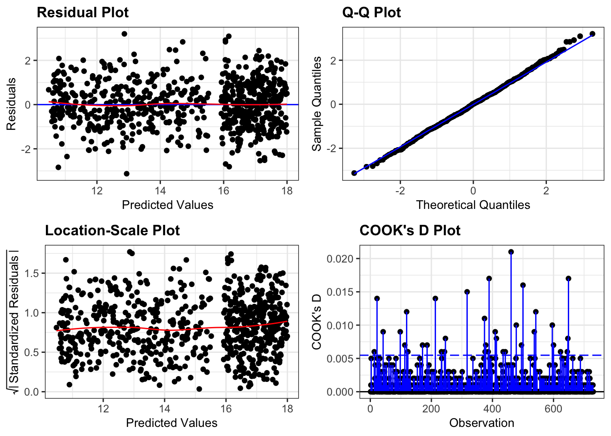
They all look pretty good, with the only weird thing being a small empty zone of predicted values just under 16. Nothing that is getting me worried though.
It’d be useful to visualise the model. We can take the model and use the augment() function to extract the fitted values (.fitted). These are the values for pm2_5 that the model is predicting. We can then plot these against the wind_m_s measurements, colouring by location:
lm_pm2_5_red %>%
augment() %>%
ggplot(aes(x = wind_m_s,
y = pm2_5, colour = location)) +
geom_point() +
geom_smooth(aes(y = .fitted))`geom_smooth()` using method = 'loess' and formula = 'y ~ x'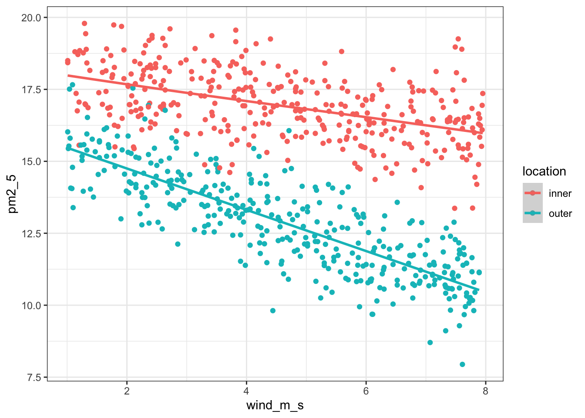
We write the model as follows:
# create a linear model
model = smf.ols(formula = "pm2_5 ~ avg_temp + C(location) + rain_mm + wind_m_s + wind_m_s:location", data = pm2_5_py)
# and get the fitted parameters of the model
lm_pm2_5_full_py = model.fit()This will give us quite a few coefficients, so instead of just printing the entire summary table, we’re extracting the parameters with .params:
lm_pm2_5_full_py.paramsIntercept 18.182858
C(location)[T.outer] -2.070843
avg_temp 0.010451
rain_mm -0.027880
wind_m_s -0.285450
wind_m_s:location[T.outer] -0.429455
dtype: float64The question is, are all of these terms statistically significant? To find out we perform an ANOVA:
sm.stats.anova_lm(lm_pm2_5_full_py, typ = 2) sum_sq df F PR(>F)
C(location) 123.803830 1.0 117.991919 1.441933e-25
avg_temp 1.803685 1.0 1.719012 1.902360e-01
rain_mm 0.350639 1.0 0.334179 5.633886e-01
wind_m_s 728.129799 1.0 693.948101 8.928636e-108
wind_m_s:location 134.820234 1.0 128.491164 1.567268e-27
Residual 759.661960 724.0 NaN NaNFrom this we can see that the interaction between location and wind_m_s is statistically significant. Which means that we can’t just talk about the effect of location or wind_m_s on PM2.5 levels, without taking the other variable into account!
The p-value for the avg_temp is significant, whereas the rain_mm main effect is not. This means that rain fall is not contributing much to model’s ability to explain our data. This matches what we already saw when we visualised the data.
What to do? We’ll explore this in more detail in the chapter on model comparisons, but for now the most sensible option would be to redefine the model, but exclude the rain_mm variable. Here I have rewritten the model and named it lm_pm2_5_red to indicate it is a reduced model (with fewer variables than our original full model):
# create a linear model
model = smf.ols(formula = "pm2_5 ~ avg_temp + C(location) * wind_m_s", data = pm2_5_py)
# and get the fitted parameters of the model
lm_pm2_5_red_py = model.fit()Let’s look at the new model coefficients:
lm_pm2_5_red_py.paramsIntercept 18.139300
C(location)[T.outer] -2.073802
avg_temp 0.010312
wind_m_s -0.286313
C(location)[T.outer]:wind_m_s -0.428800
dtype: float64As we did in the linear regression on grouped data, we end up with two linear equations, one for inner London and one for outer London.
Our reference group is inner (remember, it takes a reference group in alphabetical order and we can see outer in the output).
So we end up with:
\(PM2.5_{inner} = 18.14 + 0.01 \times avg\_temp - 0.29 \times wind\_m\_s\)
\(PM2.5_{outer} = (18.14 - 2.07) + 0.01 \times avg\_temp + (-0.29 - 0.43) \times wind\_m\_s\)
which gives
\(PM2.5_{outer} = 16.07 + 0.01 \times avg\_temp - 0.72 \times wind\_m\_s\)
We still need to check the assumptions of the model:
dgplots(lm_pm2_5_red_py)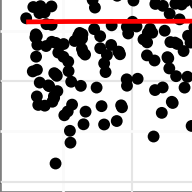
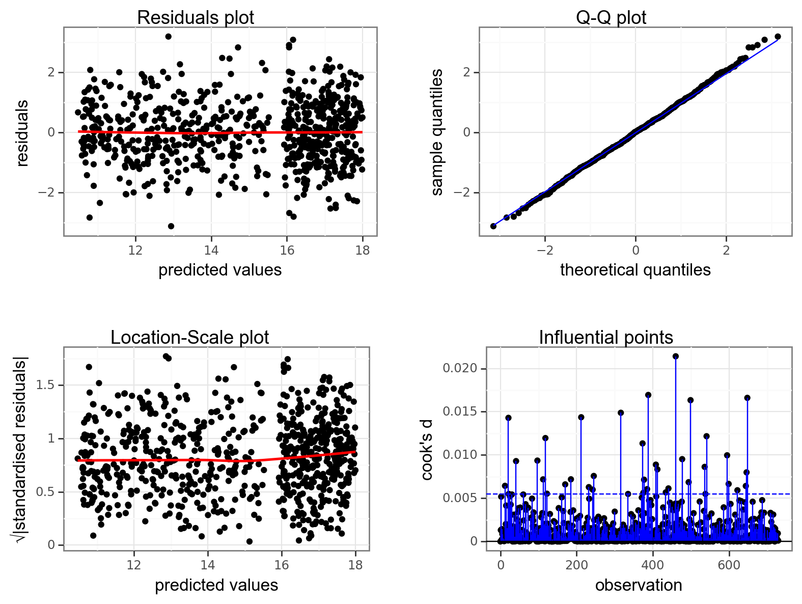
They all look pretty good, with the only weird thing being a small empty zone of predicted values just under 16. Nothing that is getting me worried though.
It’d be useful to visualise the model. We can take the model and extract the fitted values (.fittedvalues). These are the pm2_5 that the model is predicting. We can then plot these against the wind_m_s measurements, colouring by location. We’re also adding the original values to the plot with geom_point():
(ggplot(pm2_5_py, aes(x = "wind_m_s",
y = "pm2_5",
colour = "location")) +
geom_point() +
geom_smooth(aes(y = lm_pm2_5_red_py.fittedvalues)))9.6 Exploring models
Rather than stop here however, we will use the concept of the linear model to its full potential and show that we can construct and analyse any possible combination of predictor variables for this data set. Namely we will consider the following four extra models, where reduce the complexity to the model, step-by-step:
| Model | Description |
|---|---|
1. pm2_5 ~ wind_m_s + location |
An additive model |
2. pm2_5 ~ wind_m_s |
Equivalent to a simple linear regression |
3. pm2_5 ~ location |
Equivalent to a one-way ANOVA |
4. pm2_5 ~ 1 |
The null model, where we have no predictors |
9.6.1 Additive model
To create the additive model, we drop the interaction term (keep in mind, this is to demonstrate the process - we would normally not do this because the interaction term is significant!).
First, we define the model:
lm_pm2_5_add <- lm(pm2_5 ~ avg_temp + location + wind_m_s,
data = pm2_5)We can visualise this as follows:
lm_pm2_5_add %>%
augment() %>%
ggplot(aes(x = wind_m_s, y = pm2_5,
colour = location)) +
geom_point() +
geom_smooth(aes(y = .fitted))`geom_smooth()` using method = 'loess' and formula = 'y ~ x'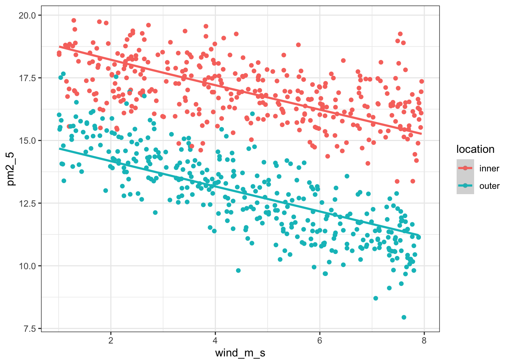
Next, we extract the coefficient estimates:
lm_pm2_5_add
Call:
lm(formula = pm2_5 ~ avg_temp + location + wind_m_s, data = pm2_5)
Coefficients:
(Intercept) avg_temp locationouter wind_m_s
19.04867 0.01587 -4.05339 -0.49868 First, we define the model
# create a linear model
model = smf.ols(formula = "pm2_5 ~ avg_temp + C(location) + wind_m_s",
data = pm2_5_py)
# and get the fitted parameters of the model
lm_pm2_5_add_py = model.fit()We can visualise this as follows:
(ggplot(pm2_5_py, aes(x = "wind_m_s",
y = "pm2_5",
colour = "location")) +
geom_point() +
geom_smooth(aes(y = lm_pm2_5_add_py.fittedvalues)))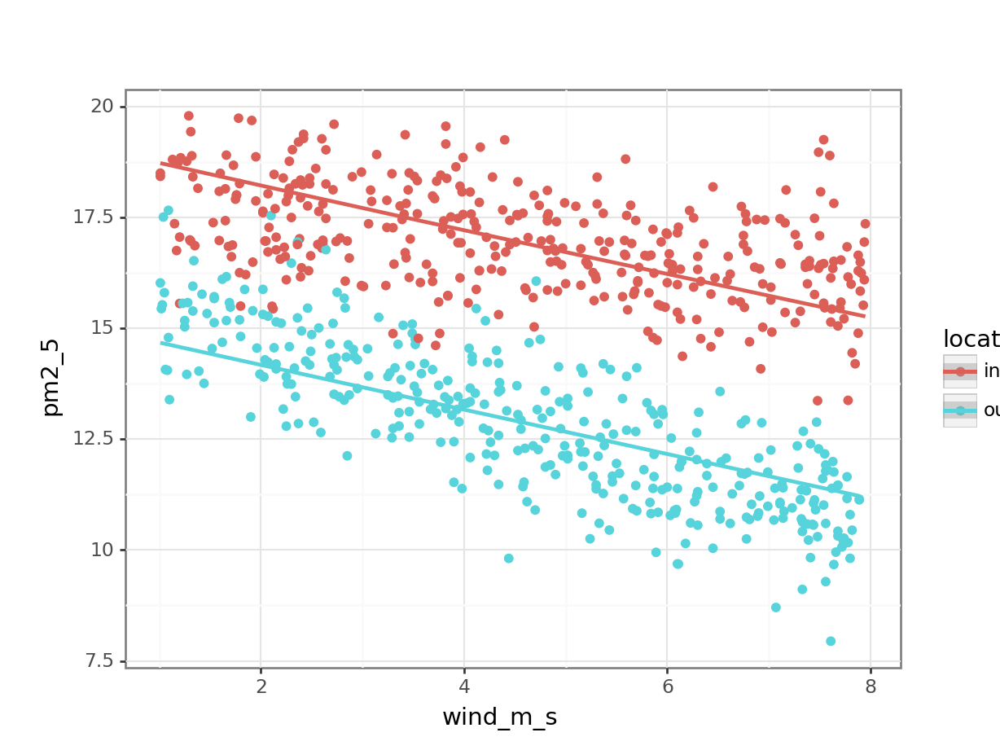
Next, we extract the coefficient estimates:
lm_pm2_5_add_py.paramsIntercept 19.048672
C(location)[T.outer] -4.053394
avg_temp 0.015872
wind_m_s -0.498683
dtype: float64So our two equations would be as follows:
\(PM2.5_{inner} = 19.04 + 0.016 \times avg\_temp - 0.50 \times wind\_m\_s\)
\(PM2.5_{outer} = (19.22 - 4.05) + 0.016 \times avg\_temp - 0.50 \times wind\_m\_s\)
gives
\(PM2.5_{outer} = 15.17 + 0.016 \times avg\_temp - 0.50 \times wind\_m\_s\)
9.6.2 Revisiting linear regression
First, we define the model:
lm_pm2_5_wind <- lm(pm2_5 ~ wind_m_s,
data = pm2_5)We can visualise this as follows:
lm_pm2_5_wind %>%
augment() %>%
ggplot(aes(x = wind_m_s, y = pm2_5)) +
geom_point() +
geom_smooth(aes(y = .fitted))`geom_smooth()` using method = 'loess' and formula = 'y ~ x'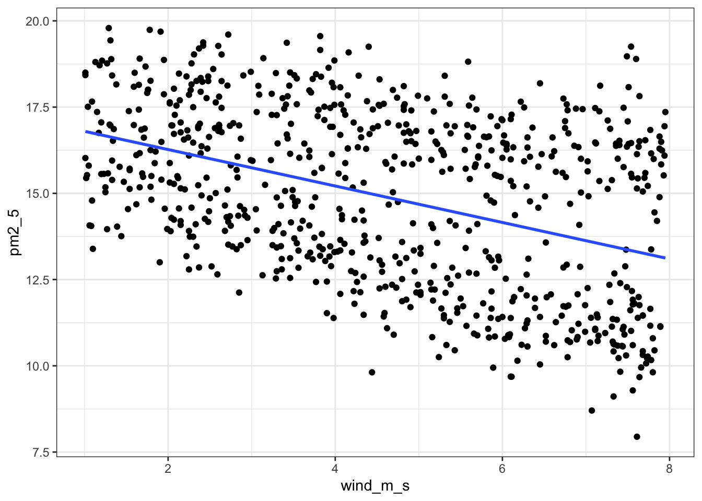
Alternative using
geom_smooth()
ggplot(pm2_5, aes(x = wind_m_s, y = pm2_5)) +
geom_point() +
geom_smooth(method = "lm", se = FALSE)`geom_smooth()` using formula = 'y ~ x'
Next, we extract the coefficient estimates:
lm_pm2_5_wind
Call:
lm(formula = pm2_5 ~ wind_m_s, data = pm2_5)
Coefficients:
(Intercept) wind_m_s
17.3267 -0.5285 First, we define the model
# create a linear model
model = smf.ols(formula = "pm2_5 ~ wind_m_s",
data = pm2_5_py)
# and get the fitted parameters of the model
lm_pm2_5_wind_py = model.fit()We can visualise this as follows:
(ggplot(pm2_5_py, aes(x = "wind_m_s",
y = "pm2_5")) +
geom_point() +
geom_smooth(aes(y = lm_pm2_5_wind_py.fittedvalues), colour = "blue"))
Alternative using
geom_smooth()
(ggplot(pm2_5_py, aes(x = "wind_m_s", y = "pm2_5")) +
geom_point() +
geom_smooth(method = "lm", se = False, colour = "blue"))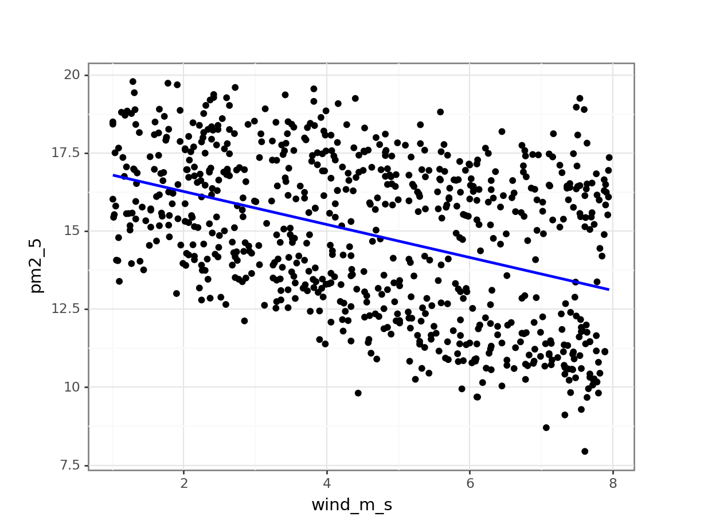
Next, we extract the coefficient estimates:
lm_pm2_5_wind_py.paramsIntercept 17.326708
wind_m_s -0.528510
dtype: float64This gives us the following equation:
\(PM2.5 = 17.33 - 0.53 \times wind\_m\_s\)
9.6.3 Revisiting ANOVA
If we’re just looking at the effect of location, then we’re essentially doing a one-way ANOVA.
First, we define the model:
lm_pm2_5_loc <- lm(pm2_5 ~ location,
data = pm2_5)We can visualise this as follows:
lm_pm2_5_loc %>%
augment() %>%
ggplot(aes(x = location, y = pm2_5)) +
geom_jitter(alpha = 0.3, width = 0.1) +
geom_point(aes(y = .fitted), colour = "blue", size = 3)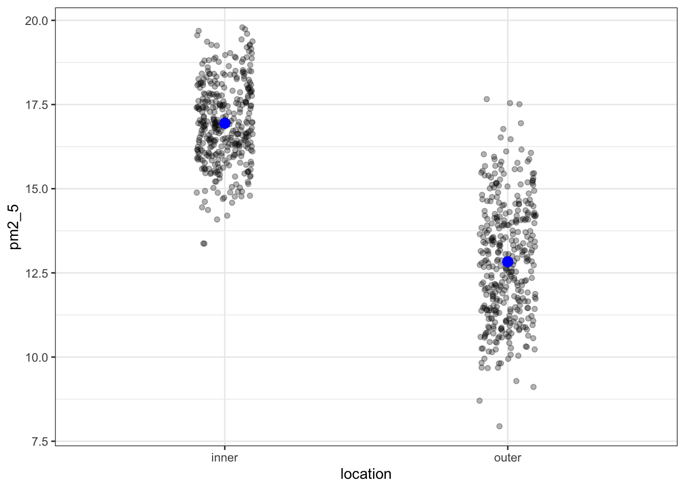
OK, what’s going on here? I’ve plotted the .fitted values (the values predicted by the model) in blue and overlaid the original (with a little bit of jitter to avoid overplotting). However, there are only two predicted values!
We can check this and see that each unique fitted value occurs 365 times:
lm_pm2_5_loc %>%
augment() %>%
count(location, .fitted)# A tibble: 2 × 3
location .fitted n
<chr> <dbl> <int>
1 inner 16.9 365
2 outer 12.8 365This makes sense if we think back to our original ANOVA exploration. There we established that an ANOVA is just a special case of a linear model, where the fitted values are equal to the mean of each group.
We could even check this:
pm2_5 %>%
group_by(location) %>%
summarise(mean_pm2_5 = mean(pm2_5))# A tibble: 2 × 2
location mean_pm2_5
<chr> <dbl>
1 inner 16.9
2 outer 12.8So, that matches. We move on and extract the coefficient estimates:
lm_pm2_5_loc
Call:
lm(formula = pm2_5 ~ location, data = pm2_5)
Coefficients:
(Intercept) locationouter
16.943 -4.112 These values match up exactly with the predicted values for each individual location.
First, we define the model:
# create a linear model
model = smf.ols(formula = "pm2_5 ~ C(location)", data = pm2_5_py)
# and get the fitted parameters of the model
lm_pm2_5_loc_py = model.fit()We can visualise this as follows:
(ggplot(pm2_5_py, aes(x = "location",
y = "pm2_5")) +
geom_jitter(alpha = 0.3, width = 0.1) +
geom_point(aes(y = lm_pm2_5_loc_py.fittedvalues), colour = "blue", size = 3))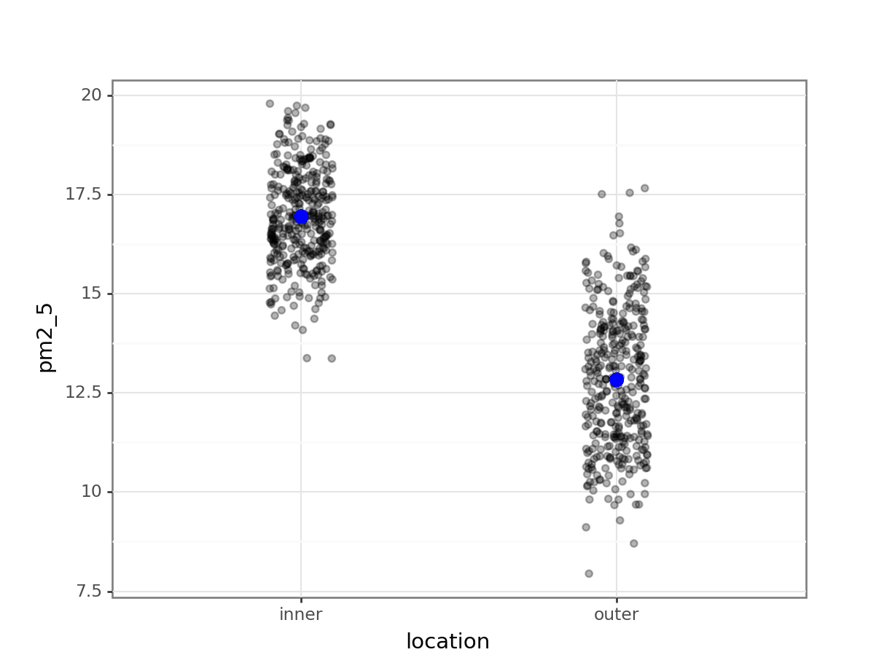
OK, what’s going on here? I’ve plotted the fittedvalues (the values predicted by the model) in blue and overlaid the original (with a little bit of jitter to avoid overplotting). However, there are only two predicted values!
We can check this and see that each unique fitted value occurs 365 times, using the value_counts() function on the fitted values:
lm_pm2_5_loc_py.fittedvalues.value_counts()16.942926 365
12.831356 365
dtype: int64This makes sense if we think back to our original ANOVA exploration. There we established that an ANOVA is just a special case of a linear model, where the fitted values are equal to the mean of each group.
We could even check this:
pm2_5_py.groupby("location")["pm2_5"].mean()location
inner 16.942926
outer 12.831356
Name: pm2_5, dtype: float64So, that matches. We move on and extract the coefficient estimates:
lm_pm2_5_loc_py.paramsIntercept 16.942926
C(location)[T.outer] -4.111570
dtype: float64These values match up exactly with the predicted values for each individual location.
This gives us the following equation:
\(\bar{PM2.5_{inner}} = 16.94\)
\(\bar{PM2.5_{outer}} = 16.94 - 4.11 = 12.83\)
9.6.4 The null model
The null model by itself is rarely analysed for its own sake but is instead used a reference point for more sophisticated model selection techniques. It represents your data as an overal average value.
We define the null model as follows:
lm_pm2_5_null <- lm(pm2_5 ~ 1, data = pm2_5)We can just view the model:
lm_pm2_5_null
Call:
lm(formula = pm2_5 ~ 1, data = pm2_5)
Coefficients:
(Intercept)
14.89 We define the null model as follows:
# create a linear model
model = smf.ols(formula = "pm2_5 ~ 1", data = pm2_5_py)
# and get the fitted parameters of the model
lm_pm2_5_null_py = model.fit()We can just view the model parameters:
lm_pm2_5_null_py.paramsIntercept 14.887141
dtype: float64This shows us that there is just one value: 14.89. This is the average across all the PM2.5 values in the data set.
Here we’d predict the PM2.5 values as follows:
\(PM2.5 = 14.89\)
9.7 Exercises
9.7.1 Trees
9.8 Summary
Key points
- We can define a linear model with any combination of categorical and continuous predictor variables
- Using the coefficients of the model we can construct the linear model equation
- The underlying assumptions of a linear model with three (or more) predictor variables are the same as those of a two-way ANOVA